Many plasmas may be considered to be collisionless in the sense that Coulomb interactions are so rare that it is the global fields in the plasma that govern the dynamics. The mean free path in the solar wind near the Earth, for example, is of the order of the Earth-Sun distance. Shocks in collisionless plasmas are observed to be a source of highly energetic electrons. These electrons are seen in locations as diverse as the Earth's bow shock and supernova shocks. The exact electron acceleration mechanism, however, remains poorly understood.
We investigate structure within quasi-perpendicular collisionless shocks. This means that the angle between the upstream magnetic field and the normal to the shock plane, qBn, is greater than 45 degrees. Such shocks show ripples in the density and magnetic field moving along the shock ramp. We use a two-dimensional hybrid code, which models the plasma as ion macroparticles and an inertialess electron fluid, to calculate the fields. We then study electron acceleration by integrating electron trajectories within these fields.
The theory of adiabatic reflection assumes that
electrons move in a magnetic field that is stationary and one dimensional. The
gyroradius of the electrons must also be much smaller than the shock thickness.
In this case, the perpendicular magnetic moment of an electron, (mu), is conserved:
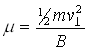
where m is the electron's mass, v(perp) is the component of its
velocity perpendicular to the magnetic field and B is the magnetic field
strength.
We work in the de Hoffmann-Teller frame, in which
the motional electric field (-V×B) is zero. This means that
we can also consider an electron to conserve its energy. The velocity required
for this transformation from the shock frame is:
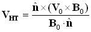
where n is the normal to the shock plane and
a subscript 0 denotes upstream quantities, so that Vo is the
upstream flow velocity. I shall denote quantities in the de Hoffmann-Teller
frame with a tilde and unit vectors with a hat. The components parallel and
perpendicular to Bo of v, an electron's velocity in
the upstream plasma frame, are:
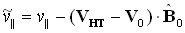
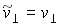
Both perpendicular magnetic moment and energy are conserved,
but there will be some electrons that cannot cross the shock whilst conserving
both. This leads to a reflected fraction. Since electrons are constrained to
move along field lines, the reflected electrons have the parallel component of
their velocity reversed in the de Hoffmann-Teller frame. It is important to
note that 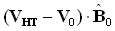 is negative, so
transforming back to the upstream plasma frame results in an accelerated
reflected population:
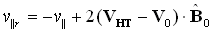
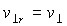
Our electron simulations start with an initial test particle
distribution that is a uniformly covered spherical shell in velocity space. The
figure below shows the possible destinations for an upstream electron.
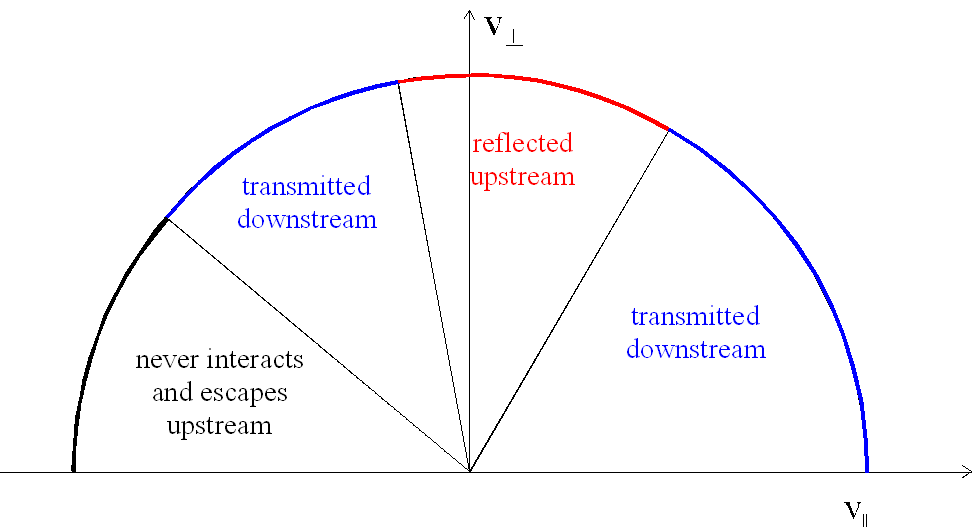
This theory allows us to calculate the energy and fraction of electrons reflected upstream and compare them with our simulation results. Adiabatic reflection has been found to be unable to accelerate electrons to the highest observed energies unless qBn is very close to 90 degrees.
We simulate a shock by reflecting homogeneous
plasma, moving at constant velocity, off a stationary perfectly conducting
barrier. This is a standard method for launching a shock, which is physically
simple, but provides a clean shock once the shock front is clear of the
barrier.
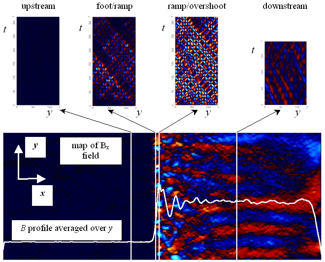
The diagram above shows two dimensional structure at the shock front in the form of ripples. These results were obtained for conditions similar to those in the Earth's bow shock and at qBn of 85 degrees. We find that the strength of the ripples increases with both qBn and the plasma inflow speed. The y-t slices demonstrate that these ripples are moving in both directions along the shock front. By acting as moving magnetic mirrors, these ripples may accelerate electrons more than adiabatic reflection alone.
We investigate electron behaviour using two orientations of the upstream magnetic field, Bo. With Bo lying in the plane of the simulation, electrons move along a field line and feel the full 2-D field structure. We also attempt to mimic a 1-D simulation by directing Bo out of the simulation plane, so that the electrons feel little variation along a field line.
This figure shows logarithmic spectra of electron energies in the upstream plasma frame at qBn = 85 degrees. The downstream population is represented by solid lines and the upstream population by dashed lines.
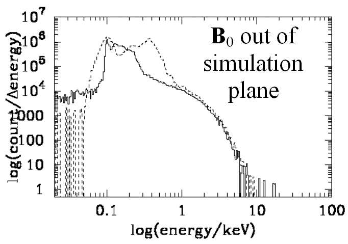 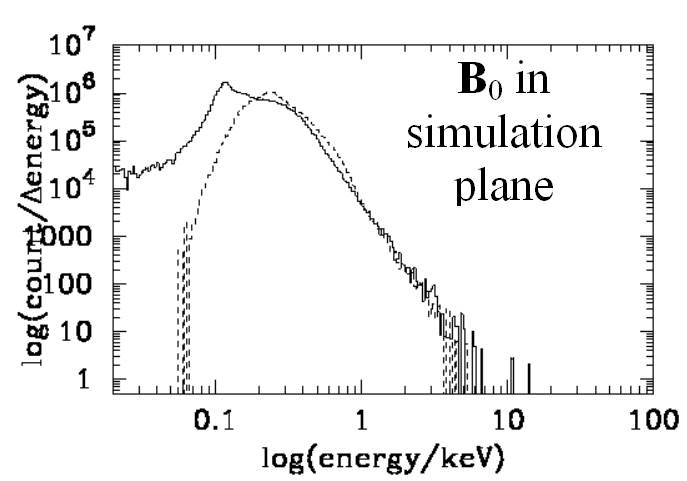
Initial electron energy: 0.1 keV
Upstream energy range predicted by theory: 0.15 - 0.39 keV
| Bo direction | Fraction | |
| upstream | downstream | |
| theory | 87% | 13% |
| out | 74% | 23% |
| in | 47% | 52% |
The above figure shows electron distributions that are broadly consistent with adiabatic theory when Bo is directed out of the simulation plane. The distributions when Bo is in the simulation plane, however, differ. Observations downstream of the Earth's bow shock reveal a population of electrons with a power law distribution of velocities at high energies. Our simulations produce spectra that are consistent with a power law when Bo is directed in the plane of the simulation. This indicates that shock surface ripples are important in understanding the electron acceleration process.
The upstream and downstream distributions are similar when Bo is in the simulation plane and electrons are allowed to feel the spatial variations in the magnetic field. This suggests that reflections occur within the shock to such an extent that the two distributions become mixed and therefore alike. This additional scattering can be attributed to the 2-D structure.
In future, we hope to improve the electron test particle code by the addition of cubic spline interpolation for the fields. We also propose to study the effect of downstream waves on the formation of shock front ripples by artificially damping downstream wave activity. An obvious criticism of this kind of study is the tight restriction placed on qBn required to produce appreciable rippling. We propose to consider the effects of inhomogeneities in the upstream field. Larger scale inhomogeneities will be examined by adding a bend to the upstream field. Smaller scale effects can be studied by introducing upstream waves. This will more accurately resemble the conditions seen at actual shocks and may increase the range of qBn over which ripples are significant.